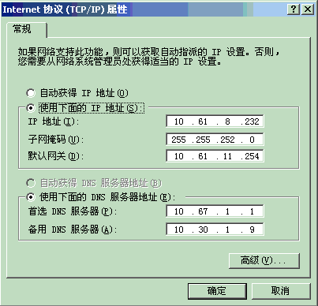

<HTML>
<HEAD>
<META http-equiv="Content-Type" content="text/html; charset=gb2312">
<TITLE>无标题文档</TITLE>
<STYLE type=text/css>
#tb_content{
	BORDER-RIGHT: 0px; BORDER-TOP: 0px; BORDER-LEFT: 0px; WIDTH: 96%; BORDER-BOTTOM: 0px; HEIGHT: 100%;  FONT-SIZE: 12px;
}
TD {
	FONT-SIZE: 12px; FONT-FAMILY: "Verdana","Arial","Helvetica","sans-serif","宋体",simsun
}
TH {
	FONT-SIZE: 12px; FONT-FAMILY: "Verdana","Arial","Helvetica","sans-serif","宋体",simsun
}
.mud {
	FONT-SIZE: 12px; LINE-HEIGHT: 19px
}
LI {
	LIST-STYLE-POSITION: outside; LIST-STYLE-IMAGE: url(../../../images/szt1-1_101-1.gif)HEAD>

<BODY>
<TABLE  id=tb_content  border="0" cellspacing="0" cellpadding="0">
  <TR>
    <TD>
        <H5>系统配置： </H5>
      	<UL>
										<LI>
											
												系统使用IE浏览器浏览，推荐使用IE 6.0以上版本。如果您的IE 版本低于6.0，请升级您的IE浏览器，升级网址:<A href="javascript:if(confirm(%27http://www.microsoft.com/downloads/details.aspx?FamilyID=ad00439d-7eca-411c-882f-ba7fe3233d11&displaylang=zh-cn  \n\nThis file was not retrieved by Teleport Ultra, because it is addressed on a domain or path outside the boundaries set for its Starting Address.  \n\nDo you want to open it from the server?%27))window.location=%27http://www.microsoft.com/downloads/details.aspx?FamilyID=ad00439d-7eca-411c-882f-ba7fe3233d11&displaylang=zh-cn%27" >
														微软下载中心</A>,下载安装IE 
										6.0，按照提示安装即可。</font></span></DIV>
										<LI>
											
										
										如果您无法打开<A href="javascript:if(confirm(%27http://pdb.zte.com.cn/  \n\nThis file was not retrieved by Teleport Ultra, because it is addressed on a domain or path outside the boundaries set for its Starting Address.  \n\nDo you want to open it from the server?%27))window.location=%27http://pdb.zte.com.cn/%27"  target="_top">ZTEPDB</A>,请检查您的网络的代理设置，打开控制面板-网络和拨号连接-本地连接，
										-&gt;属性-&gt;双击“Internet（TCP/IP）”，在DNS栏中，输入<FONT color="#ff0000">10.67.1.1</FONT>,点击确定即可。如下图所示： 
        <BR></font></span>
										<LI>	如果您在正确配置后，仍然不能正常访问，请与IT中心上海科联系，电话021-68895181
        我们愿意忠心为您服务。</font></SPAN>
											
										</LI>
									</UL>
									</p></TD>
  </TR>
</TABLE>
</BODY>
</HTML>
